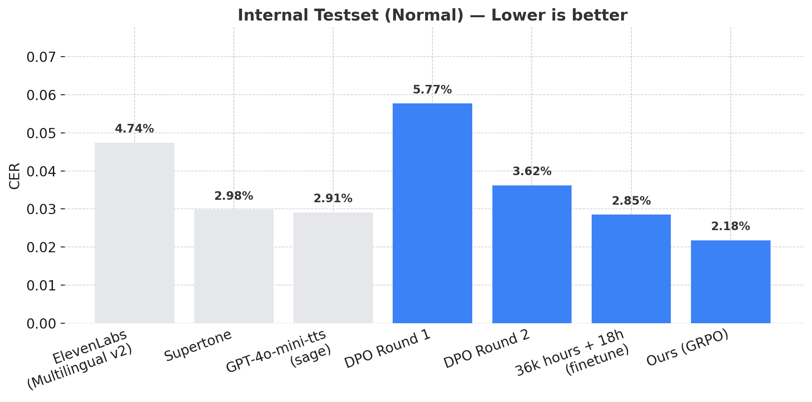

FAQ나 도큐먼트에서 '홈페이지 주소를 입력하거나 이미지를 등록하면 텍스트, 이미지 등을 크롤링하여 답변하는 기능'에 대한 정보가 없어 조금 더 자세한 설명을 부탁드려도 될까요?
GPT-4o-mini-tts (sage)
ElevenLabs (Multilingual v2 - Anna Kim)
국내 TTS
Ours
자체 벤치마크 성능 비교

그림 1. Channel TTS와 글로벌 TTS 경쟁모델들의 음성발화 벤치마크 성능 (CER) 비교 으로 낮을수록 성능이 좋습니다. 자체 모델(Ours)은 GRPO 이후 가장 낮은 CER을 달성했습니다. 대다수가 한글로만 구성된 internal testset으로 평가하였으며, 샘플레이트를 8khz (전화음성)로 변환하지 않고 각각 Provider 모델의 원본 샘플을 사용하였습니다.
정성 평가
둥둥레스토랑 성인 요금은 평일 런치 19,992원, 평일 디너 25,940원, 주말 및 공휴일은 37,771원입니다.